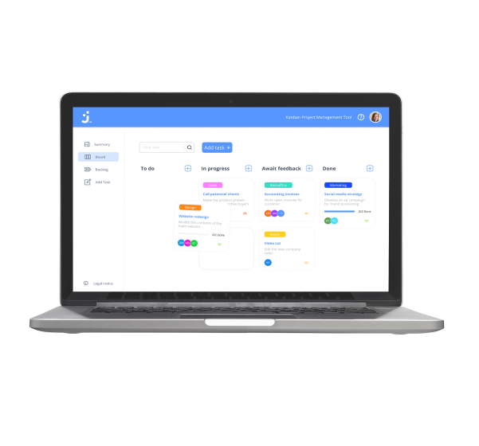
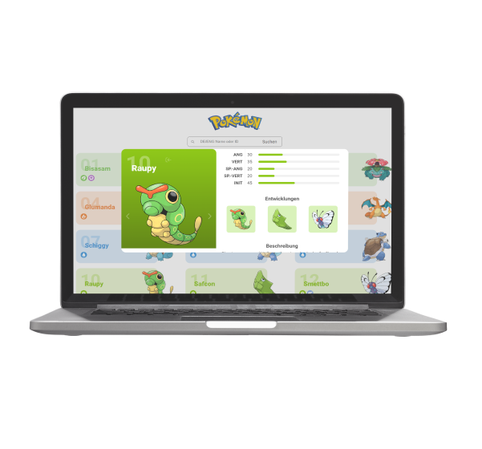

Join
Angular | TypeScript | HTML | CSS | Firebase
Task manager inspired by the Kanban System. Create and organize tasks
using drag and drop functions, assign users and categories.
El Pollo Loco
JavaScript | HTML | CSS
A simple Jump-and-Run game based on an object-oriented approach. Help
pepe to find coins and poison bottles to fight against the angry chicken.

Pokédex
JavaScript | HTML | CSS | Api
Based on the PokéAPI a simple library that provides and catalogues
pokemon information.